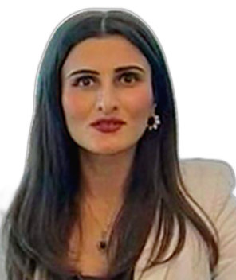

Profil
Aygül İsayeva 2021-ci ilin yanvarından Tbilisidə SOCAR Energy Georgia-nın biznes kommunikasiyası və ictimaiyyətlə əlaqələr şöbəsində çalışır. 2018–2020-ci illərdə Gürcüstan azərbaycanlılarının inteqrasiya mərkəzinin icraçı direktoru, 2016–2020-ci illərdə Qafqaz Beynəlxalq Universitetində dosent olub. 2011–2013-cü illərdə Beynəlxalq Qara Dəniz Universitetində biznesin idarə edilməsi doktoru (PhD) dərəcəsi alıb. 2006–2008-ci illərdə BI Norveç Biznes Məktəbində marketinq ixtisası ilə biznes və iqtisadiyyat üzrə magistr dərəcəsi alıb. 2002–2006-cı illərdə Xəzər Universitetində beynəlxalq iqtisadi münasibətlər üzrə fərqlənmə diplomu ilə bakalavr dərəcəsi alıb. 2023-cü ilin sentyabrından ADA Universitetində tədris və öyrənmə üzrə magistraturadadır. Məzuniyyət 2025-ci ilin mayına gözlənilir.
İş təcrübəsi
SOCAR Energy Georgia, Tbilisi, Gürcüstan
yanvar 2021–hazırdaBiznes kommunikasiyası və ictimaiyyətlə əlaqələr şöbəsi
Gürcüstan azərbaycanlılarının inteqrasiya mərkəzi, Marneuli, Gürcüstan
December 2018–November 2020İcraçı direktor
Qafqaz Beynəlxalq Universiteti, Tbilisi, Gürcüstan
September 2016–2020Dosent
SOCAR Georgia Petroleum, Tbilisi, Gürcüstan
February 2011–April 2019Marketinq meneceri
Beynəlxalq Qara Dəniz Universiteti, Tbilisi, Gürcüstan
March 2011–2013Dəvətli müəllim
Azərbaycan Marketinq Cəmiyyəti, Bakı, Azərbaycan
June 2010–January 2011İcraçı direktor
Xəzər Universiteti, Bakı, Azərbaycan
September 2008–June 2010Beynəlxalq əlaqələr və layihələr üzrə prezident köməkçisi
Xəzər Universiteti, Bakı, Azərbaycan
May 2009–June 2010Direktor müavini
- İqtisadi Siyasət və İnkişaf Mərkəzi
Xəzər Universiteti, Bakı, Azərbaycan
2008–2011Müəllim
- Marketinqin əsasları; beynəlxalq biznes; xidmət marketinqi
Xəzər Universiteti, Bakı, Azərbaycan
July 2005–August 2006Karyera İnkişafı Mərkəzinin koordinatoru
Təhsil
MSc
sentyabr 2023–hazırdaTədris və öyrənmə. Məzuniyyət 2025-ci ilin mayına gözlənilir
ADA Universiteti, Təhsil fakültəsi, Bakı və Qazax, Azərbaycan
DBA
October 2011–March 2013Biznesin idarə edilməsi və marketinq. Bu dərəcəni PhD də adlandırır
Beynəlxalq Qara Dəniz Universiteti, Tbilisi, Gürcüstan
MSc
August 2006–August 2008Biznes və iqtisadiyyat, marketinq ixtisası
BI Norveç Biznes Məktəbi, Oslo, Norveç
Bakalavr dərəcəsi
September 2002–January 2006Beynəlxalq iqtisadi münasibətlər. Fərqlənmə diplomu
Xəzər Universiteti, Bakı, Azərbaycan
Tədris
- September 2016–2020 — Dosent — Qafqaz Beynəlxalq Universiteti, Tbilisi
- March 2011–2013 — Dəvətli müəllim — Beynəlxalq Qara Dəniz Universiteti, Tbilisi
- 2008–2011 — Marketinqin əsasları; beynəlxalq biznes; xidmət marketinqi — Xəzər Universiteti, Bakı
DAAB fəaliyyəti
- 8–12 September 2024 — Xaricdə yaşayan Azərbaycanlı alimlərin forumu, Bakı, Xankəndi və Şuşa — Diasporla İş üzrə Dövlət Komitəsi, Elm və Təhsil Nazirliyi və Dünya Azərbaycanlı Alimlər Birliyinin dəstəyi ilə
Nəşrlər
Kitablar və dərsliklər
1. Isayeva, Aygul. (2020). Corporate Responsibility: Sustainability challenges to the oil and gas sector of the economy. LAP LAMBERT Academic Publishing. ISBN 978-620-2-91810-7.
2. Isayeva, Aygul. (2013). Customer Loyalty Phases. Customer Satisfaction with Service Recovery: comparative analyses in Azerbaijan and Georgia. Universal Publishing House. ISBN 978-9941-17-997-6.
3. Isayeva, Aygul. (2013). Customer Satisfaction. LAP LAMBERT Academic Publishing. ISBN 978-3-659-18293-8.
Rəylənmiş (peer-reviewed) jurnal məqalələri
1. Isayeva, Aygul. (2014). Ethics in International Marketing. International Journal of Economic Practices and Theories, special issue on Marketing and Business Development, 4(5), 552–561.
2. Isayeva, Aygul. (2012). Relationship between Satisfaction with Service Recovery and its Drivers. International Journal of Marketing Practices and Principles, 2 (April), 44–55.
3. Isayeva, Aygul. (2012). Ethics in International Marketing. Journal of Qafqaz University, 33, 1–11.
4. Isayeva, Aygul. (2011). Relationship between Satisfaction with Service Recovery and its Drivers. Khazar Journal of Humanities and Social Sciences, 14(2), 73–89.
5. Isayeva, Aygul. (2011). The role of the advertising agency: Standardization/Adaptation. IBSU Scientific Journal, 5(2), 5–12.
6. Isayeva, Aygul. (2011). Comperative Analysis of Economic Factors Affecting Export and Import in the Countries of the South Caucasus. Journal of Qafqaz University, 32, 79–86.